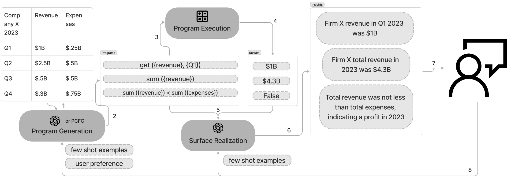
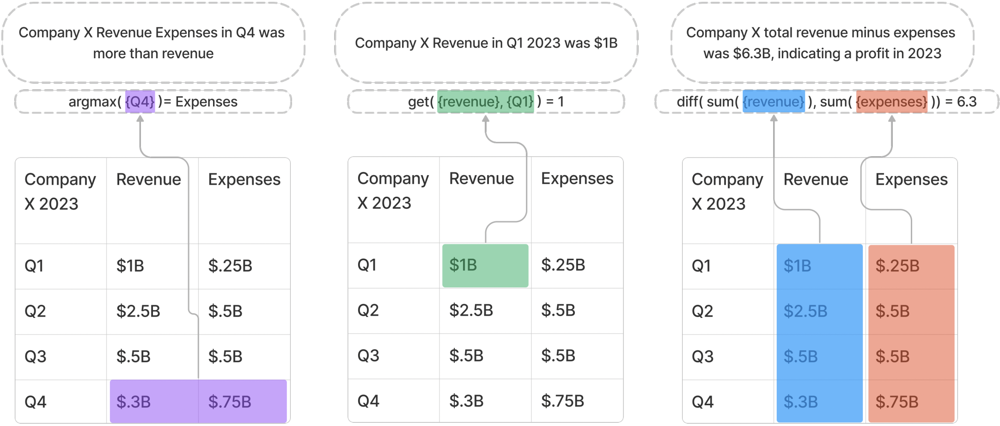
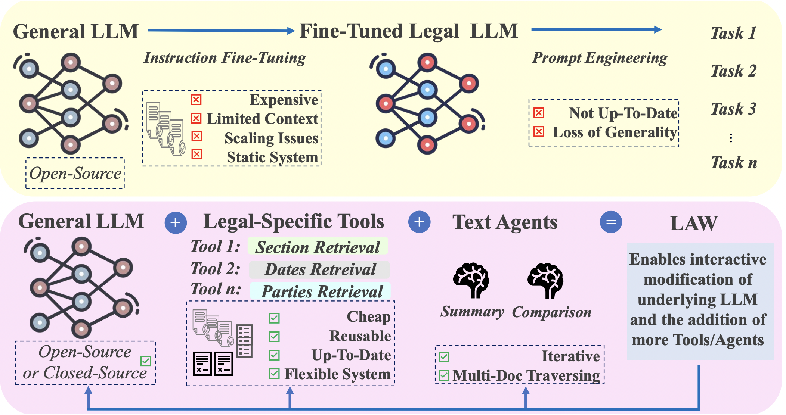
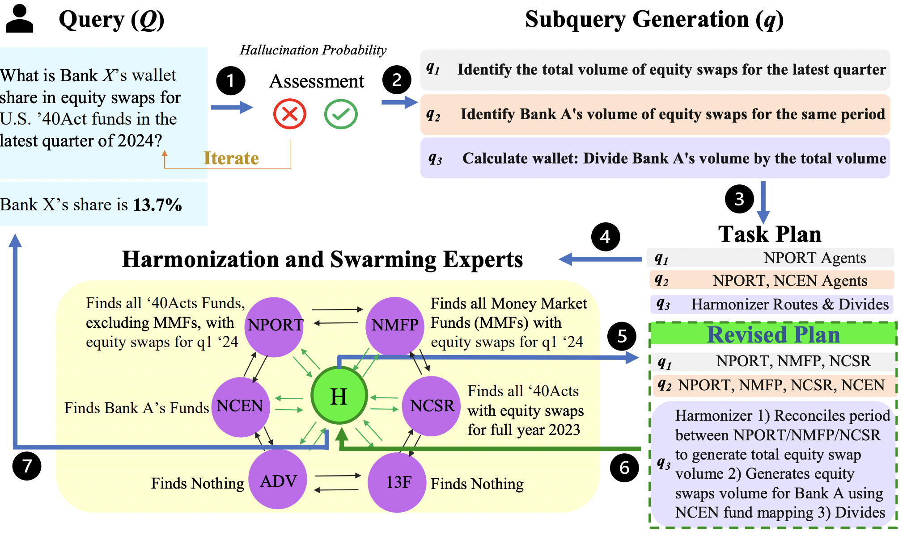
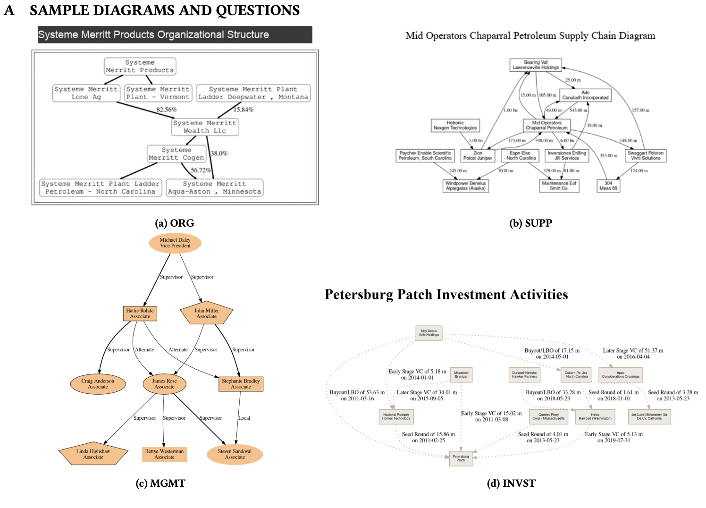

|
Lucas Cecchi
I'm an Engineer at JP Morgan AI Research in NYC.
|
|
|


|
ReportGPT: Human-in-the-loop Verifiable Table-to-Text Generation
Lucas Cecchi,
Petr Babkin
Empirical Methods in Natural Language Processing (EMNLP), 2024
We introduce a human-in-the-loop table-to-text generation pipeline that leverages LLMs, context-free grammars, and a domain-specific language, finding that LLM-based components trade off precision for more insightful downstream commentary
|
|

|
LAW: Legal Agentic Workflows for Custody and Fund Services Contracts
William Watson,
Nicole Cho,
Nishan Srishankar,
Zhen Zheng,
Lucas Cecchi,
Daniel Scott,
International Conference on Computational Linguistics (COLING), 2025
We introduce a modular legal agentic framework that leverages domain-specific agents and tools to enhance contract analysis in custody and fund services, significantly improving accuracy and efficiency over baseline LLMs
|
|

|
FISHNET: Financial Intelligence from Sub-querying, Harmonizing, Neural-Conditioning, Expert Swarms, and Task Planning
Nicole Cho, Nishan Srishankar, Lucas Cecchi, William Watson
ACM International Conference on AI in Finance (ICAIF), 2024
We introduce a heterogeneous multi-agent swarm that answers a query about financial documents by validating the question, breaking it into sub-tasks, and ochestrating the sub-task to agents specialized on particular filings
|
|

|
BizGraphQA: A dataset for image-based inference over graph-structured diagrams from business domains
Petr Babkin, William Watson, Zhiqiang Ma, Lucas Cecchi, Natraj Raman, Armineh Nourbakhsh, Sameena Shah
ACM Special Interest Group on Information Retrieval (SIGIR), 2023
We present a dataset of 130,000 questions on 10,000 synthetic graph-structured diagrams, realistically rendered in PDFs with diverse styles and layouts, along with a multimodal transformer baseline
|
|
{kind=link}